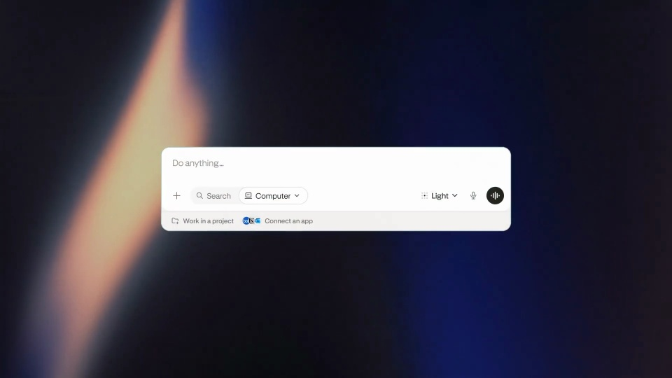
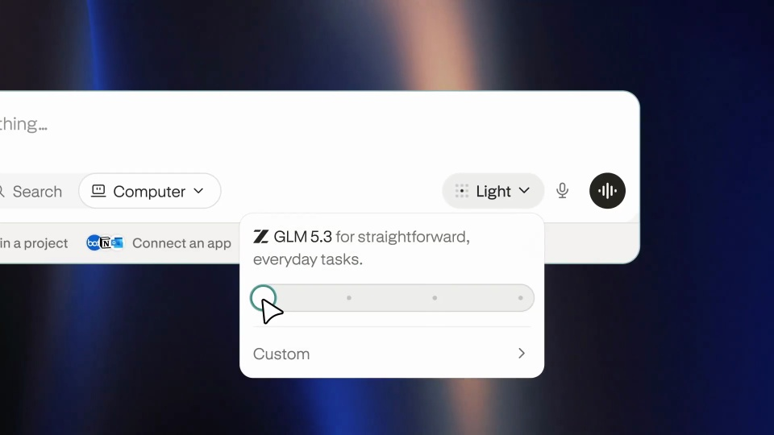
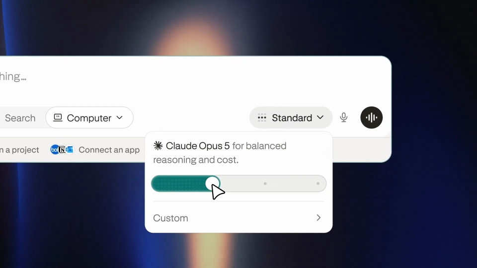
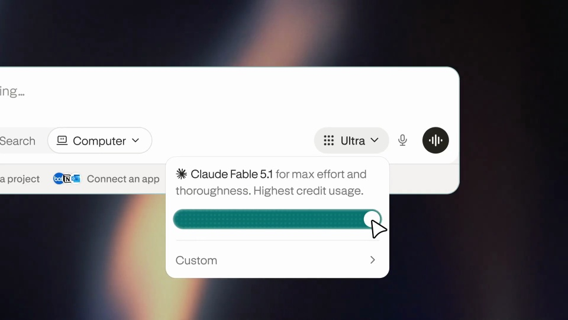

Perplexity / V269
Computer — effort controls in the model selector
围绕一个强度滑杆演示四个档位。填充、档名和说明同步变化，其他界面保持稳定。
构图与编排 可播放 · 可替换内容
整体编排规则示例
查看 HTML 源码
<!doctype html><html lang="zh-CN"><meta charset="utf-8"><meta name="viewport" content="width=device-width,initial-scale=1"><title>Computer — effort controls in the model selector · sequence</title><style>html,body{margin:0;width:100%;height:100%;overflow:hidden;background:#121727}canvas{display:block;width:100%;height:100%;object-fit:contain}</style><body data-mode="sequence"><canvas width="1000" height="600"></canvas><script src="data.js"></script><script src="common.js"></script><script src="scene.js"></script><script src="bridge.js"></script></body></html>画面元素输入栏强度菜单分档滑杆模型说明指针
MOTION LANGUAGE
动作与构图
局部动作 · 构图规则
01
把注意力留在同一控件
把注意力留在同一控件规则示例
查看 HTML 源码
<!doctype html><html lang="zh-CN"><meta charset="utf-8"><meta name="viewport" content="width=device-width,initial-scale=1"><title>Computer — effort controls in the model selector · sequence</title><style>html,body{margin:0;width:100%;height:100%;overflow:hidden;background:#121727}canvas{display:block;width:100%;height:100%;object-fit:contain}</style><body data-mode="clip" data-start="3" data-end="8.5"><canvas width="1000" height="600"></canvas><script src="data.js"></script><script src="common.js"></script><script src="scene.js"></script><script src="bridge.js"></script></body></html>输入栏出现后打开强度菜单，镜头只需容纳菜单、指针和必要上下文。滑杆轨道固定，指针逐档移动；每到一档，立即更新名称与模型说明。
02
档位要有可读的停顿
Light、Standard、High、Ultra 依次经过，每档留出短暂停顿。激活标记、已填充长度和文字属于同一个状态，不能先后错开成三个独立动画。
| 变化项 | 约束 |
|---|---|
| 轨道与菜单 | 位置和尺寸固定 |
| 滑块与填充 | 落在同一档位 |
| 名称与说明 | 随档位同时替换 |
| 指针 | 负责移动和选择，不遮住档名 |
03
深色舞台与浅色菜单
深蓝背景承接浅色控件，青绿只标记当前档位。品牌标题使用衬线，菜单与解释文字用无衬线；轨道附近保持留白，标签对齐各档中心。
04
也可以演示质量、预算或速度
替换四个档名和解释即可迁移，但每个档位必须有明确语义。若改成连续数值控制，应改用连续读数，不保留误导性的分档停顿。
SEQUENCE
段落与节奏
点击段落，定位到上方编排示意。




画面参考 · 离散静帧
KEEP THE RELATIONSHIPS
制作其他主题
- 可改成质量、速度或预算档位；保留分档映射而非只改颜色。
制作约束
输入栏 / 强度菜单 / 分档滑杆 / 模型说明 / 指针
- 一个滑杆逐档增加，档名、模型说明与填充长度同步变化。
- 先打开菜单再调节，变化范围局限于同一控件。